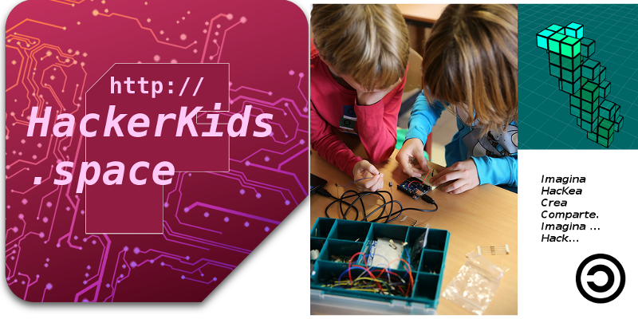

Hackerkids | Space
Proyecto Escolar.En permamente construcción.
Un acompañamiento respetuoso con las necesidades de nuestros niñxs
...sanando, empoderándonos (que no consumiendo) nuevas tecnologías
Aprendizaje activo
... lxs niñxs son los protagonistas. Demiurgos, la electrónica, informática...etc, son extensiones de su creatividad innata.
Tecnología para todxs
Tecnologías inclusivas tan sólo pueden nacer de corazones conectados a sus mentes.De nuestros niñxs de todas las edades.